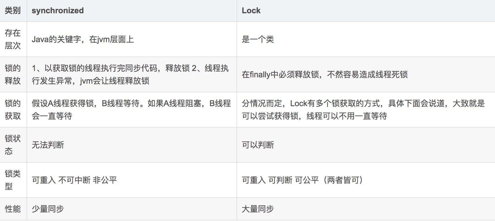

答：多线程下对同一资源的访问，为了保证数据的正确性，所以才用到了锁。比如我们都知道HashMap是多线程不安全的数据结构，如果我们加入读写锁（读写锁相对于重入锁性能要高一些），便可以解决这个问题。
公平锁是指多个线程在等待同一个锁时，必须按照申请锁的先后顺序来一次获得锁。
非公平锁是指如果在某个时刻有线程需要获取锁，而这个时候刚好锁可用，那么这个线程会直接抢占，而这时阻塞在等待队列的线程则不会被唤醒。非公平锁会导致某些阻塞的线程处于饥饿状态，一直饿死，但是非公平锁整体性能较高。
我们观察java中ReentrantLock源码其中构造函数如下
public ReentrantLock() {
sync = new NonfairSync();
}
public ReentrantLock(boolean fair) {
sync = fair ? new FairSync() : new NonfairSync();
}
默认构造函数产生的是非公平锁，new ReentrantLock(true)则可以产生公平锁。
synchronized和ReentrantLock和ReentrantReadWriteLock 都是重入锁
重入锁意思为：同一线程外层函数获得锁之后 ，内层递归函数仍然有获取该锁的代码。
ReentrantReadWriteLock 和 StampedLock 都是读写锁
ReentrantReadWriteLock锁针对于读读不互斥，读写互斥，写写互斥。
StampedLock锁针对于读读不互斥，写写互斥，读时不阻塞写。
